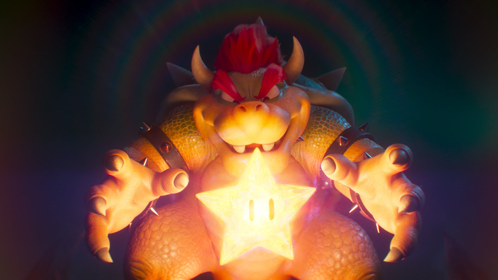

Descripción
Bowser, también conocido como el Rey de los Koopas, es un icónico villano en el universo de Mario Bros. Este imponente y malévolo reptil, de aspecto draconiano, destaca por su piel verde y rugosa, espinas afiladas y una melena roja ardiente. Su inconfundible caparazón resistente es su distintivo, protegiéndolo de los ataques enemigos. Bowser es conocido por sus planes para secuestrar a la Princesa Peach y tomar el control del Reino Champiñón. Su profundo gruñido y su temperamento volcánico hacen de él un formidable adversario para Mario y sus amigos, añadiendo un elemento constante de desafío y emoción al juego.
Bowser es mi personaje favorito debido a su carismática personalidad y su papel icónico como villano en los juegos de Mario, que siempre añade emoción y desafío a la historia. Su diseño único y su resistencia a lo largo de los años lo hacen memorable.